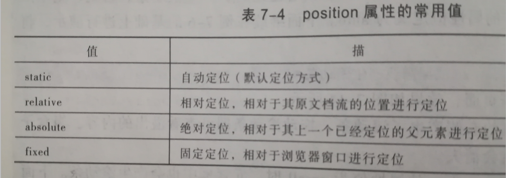

position:static 静态定位 是元素默认定位方式，就是各元素在HTML文档流中的默认位置。
注意：任何元素在默认状态下都会以静态定位来确定自己的位置，在静态定位状态下，无法通过边偏移属性（top,bottom,left,right)来改变元素位置。
position:relative 相对定位是将元素相对于它在标准文档流中的位置进行定位，对元素设置相对定位后，可以通过边偏移属性改变元素的位置，但是它在文档流中的位置仍将保留。
position:absolute 是将元素依据最近的已经定位（绝对，固定，或相对定位）的父元素进行定位，若所有父元素都没有定位则依据body根元素(浏览器窗口)进行定位。
注意:如果仅设置绝对定位，不设置边偏移，则元素的位置不变，但其不在占用标准文档流中的空间，与上移后续元素重叠。
position:fixed 相对与浏览器窗口作为参照物来进行定位，脱离文档流。
z-index层叠等级属性
z-index取值可为正整数，负整数，和0，默认属性值是0，z-index属性仅针对定位元素生效。